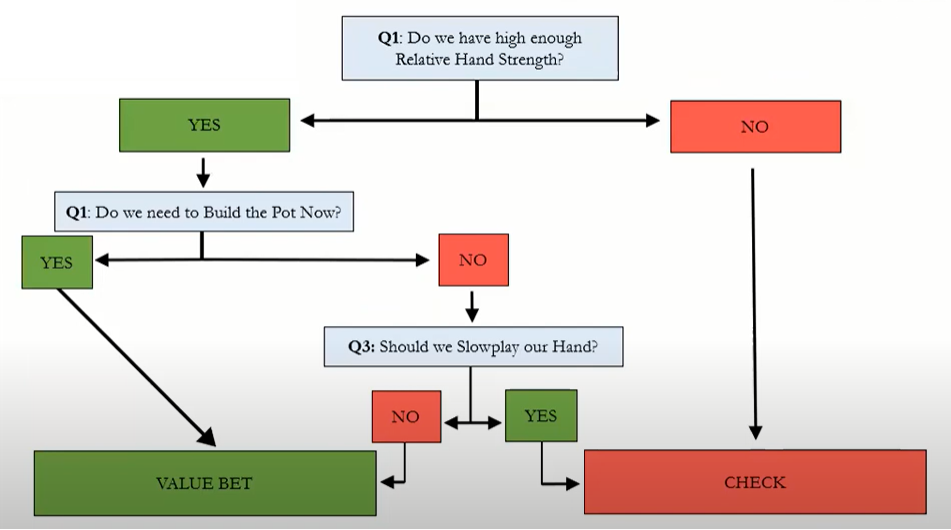

Procedural Check
This is when the non-aggressor in the previous round has to go before the aggressor you always check. Checking is great since it doesn't necessarily mean you have a weak hand or a strong hand. It also keeps you safe from getting 3bet and having to fold. It is also good because it gives you a chance to 3bet the aggressor if they raise.
Donk Bet
Short for the Donkey Bet. This is the opposite of the procedural check. This is when the non-aggressor bets before the aggressor in the previous round. This is bad since we lost the ability to 3bet them but gives them the ability to do it to us. Putting us in a whole lot of pain as Villian can easily pressure us.
Value C-Bet
A value bet is when Hero expects to have +50% equity over the Villian's range. We value bet to increase pot size to be able to make a lot more money. There are 3 main things to ask yourself when value betting. 1) Do we have a high enough relative hand strength? - Simply the rank of your hand and if it is better than Villian's calling range. 2) Do we need to build the pot? - The bigger the pot, the more we can bet, and the more we can bet, the more we can win. Sometimes we will not need to build the pot because the smallest stack is the most someone can bet, so there would be no point in trying to raise the pot since it would be capped. 3) Should we slowplay our hand? - This is more passive and only necessary when we don't need to build up the pot or if playing against very agro players.

This is a good chart to follow.